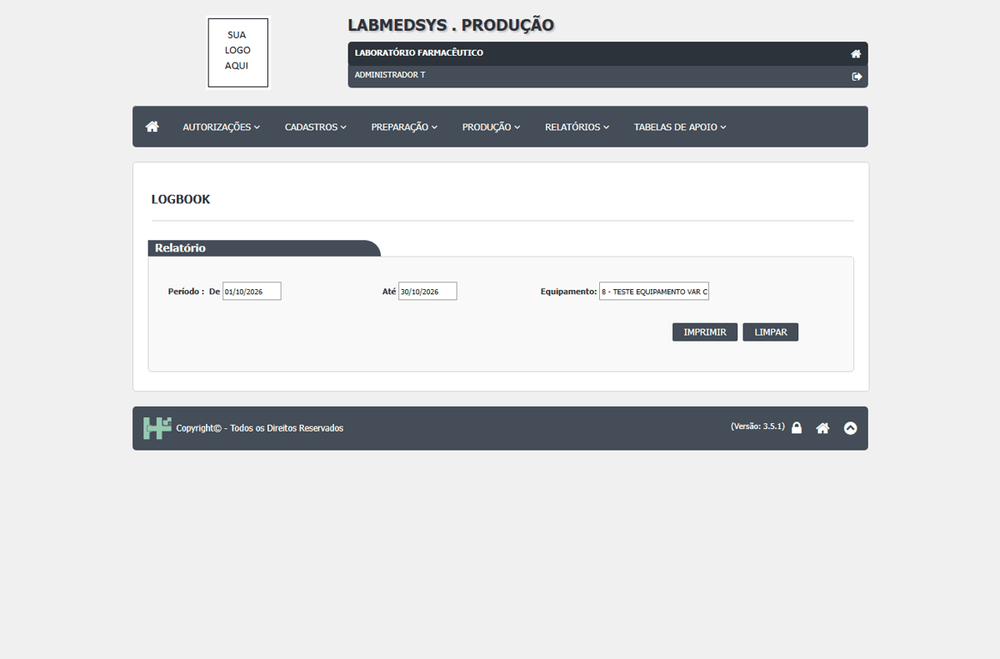
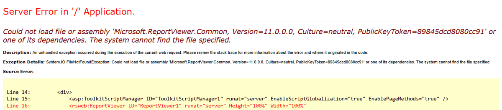
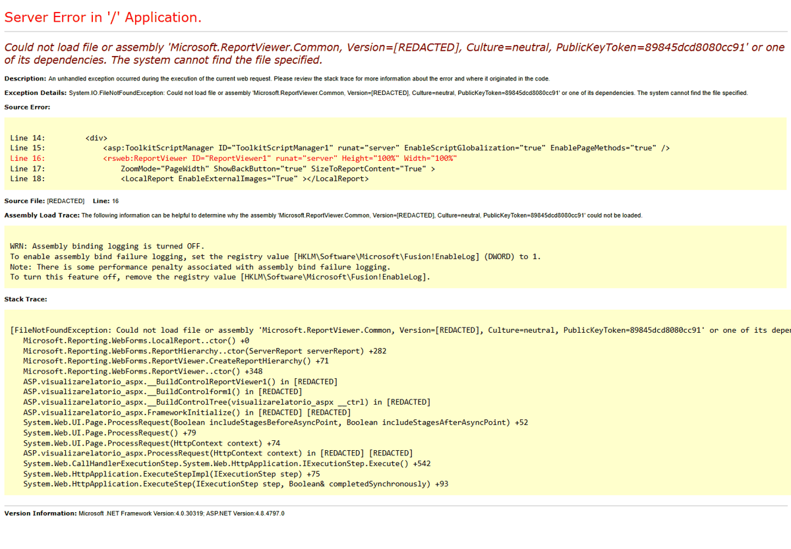

DV-PRO-002 · LogBook não carrega o visualizador de relatórios
Ao imprimir o LogBook filtrado para o equipamento TESTE, a janela de relatório mostra erro informando que a dependência Microsoft.ReportViewer.Common, versão 11.0.0.0, não foi encontrada. O relatório não é renderizado. A evidência foi recortada para omitir caminhos internos do servidor.
Como reproduzir o erro, passo a passo
- Abrir Produção > Relatórios > LOGBOOK pelo menu.
- Selecionar o período de 01/10/2026 a 30/10/2026 e o equipamento TESTE EQUIPAMENTO VAR C.
- Clicar em IMPRIMIR.
Esperado
Abrir o LogBook filtrado com cabeçalho e registros do equipamento TESTE.
Obtido
A janela abre uma página de erro de aplicação: dependência Microsoft.ReportViewer.Common versão 11.0.0.0 ausente; o relatório não aparece.
Evidência (captura da tela)




